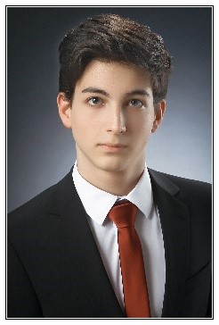

|
Bali Zsombor vagyok, a Budapesti Műszaki- és Gazdaságtudományi Egyetem hallgatója. Egyetemi pályafutásom 2019 őszén kezdtem fizika szakos hallgatóként szintén a BME-n. Egy félév próbálkozás után viszont rá kellett jönnöm, hogy ez nem igazán nekem való, ezért a tavaszi félévet és a nyarat dolgozással töltöttem. A munkám során kamatoztatni tudtam a felsőfokú angol nyelvtudásomat és az alapvető műszaki ismereteimet, ezáltal bővíteni tudtam a szaknyelvi szókincsemet is. Számos angol nyelvű műszaki cikk segítségével tartottam előadásokat és ismertetőket bizonyos témakörökről a munkatársaimnak magyar nyelven. Ezeken kívül az iskolai csoportos projektekben is rám jutott a szövegek fordítása. Jelenleg a BME energetikai mérnök szakán tanulok, ahol tovább tudom bővíteni a tudásom mindkét területen. |
 |